54 actiewoorden
Negen reeksen · zes beelden per dobbelsteen · Praatpad
01 · De dag beginnen
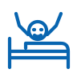
wakker wordenAW-01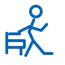
opstaanAW-02zich wassenAW-03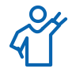
zich aankledenAW-04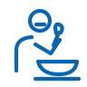
etenAW-05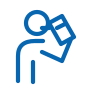
drinkenAW-0602 · In huis
kokenAW-07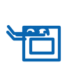
bakkenAW-08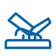
snijdenAW-09afwassenAW-10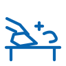
schoonmakenAW-11slapenAW-12 03 · Onderweg
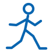
lopenAW-13rennenAW-14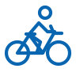
fietsenAW-15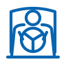
autorijdenAW-16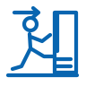
instappenAW-17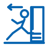
uitstappenAW-1804 · Taal en leren
lezenAW-19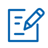
schrijvenAW-20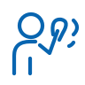
luisterenAW-21sprekenAW-22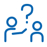
vragenAW-23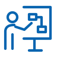
uitleggenAW-24 05 · Samen
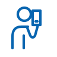
bellenAW-25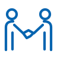
begroetenAW-26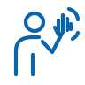
zwaaienAW-27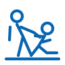
helpenAW-28gevenAW-29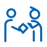
bedankenAW-3006 · Winkelen en meenemen
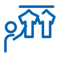
kiezenAW-31kopenAW-32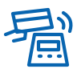
betalenAW-33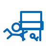
zoekenAW-34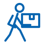
dragenAW-35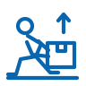
tillenAW-3607 · Werk en maken
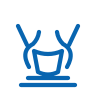
makenAW-37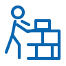
bouwenAW-38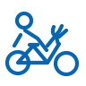
reparerenAW-39typenAW-40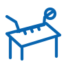
metenAW-41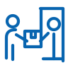
bezorgenAW-4208 · Vrije tijd
zwemmenAW-43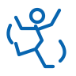
dansenAW-44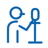
zingenAW-45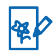
tekenenAW-46fotograferenAW-47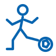
voetballenAW-48 09 · Actie en verandering
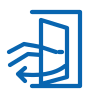
openenAW-49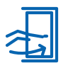
sluitenAW-50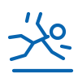
vallenAW-51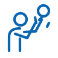
vangenAW-52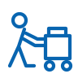
duwenAW-53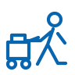
trekkenAW-54